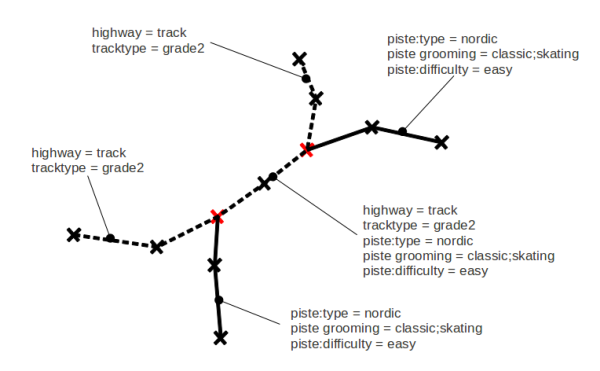

The absolute beginner guide to map a XC trail
So, your favorite trail is not shown on the map? This guide will teach you how to add it yourself, from A to Z.
Disclaimer: One of the policy of OpenStreetMap is 'tag as you want'. So, understand the tagging scheme exposed here as 'how I do', you are free to do otherwise!
Note: You are about to edit the OpenStreetMap database. This database is free and open, but you are asked to respect the following rules:
_Do not use copyrighted maps or data as a source. Don't loose your time adding features from Google Maps or topographic maps like IGN, this infringe their term of use and your work is likely to be deleted from OpenStreetMap.
_ Do not tag for the renderer OpenStreetMap is not exactly a 'map', but rather a geographic database. A renderer is a piece of software that compute a map with data from OpenStreetMap database. The priority here is to have high quality information in the database. Contact the one in charge of the rendering of a particular map or website if you think the map representation is not accurate or false. Keep in mind that the vast majority of map users do not care much about crosscountry skiing !
- First Step: register at OpenStreetMap
- The Source
- Edit the map
- Tags
- There is already a track followed by the XC trail
- My trail has a name and is marked with a color
- Rendering the trail
- Going further with relations
- Useful Links
First Step: register at OpenStreetMap
To edit the map, you need an account at OpenStreetMap, it's free. Follow the following link: https://www.openstreetmap.org/user/new
The source
To add new ways in the map, you will need something draw upon. The map editors will provide you with aerial imagery to help you. This could be sufficient for you to draw a trail. However, if you have recorded a GPX trace with a GPS or with your smart-phone, it is the good time to upload it to the database. You can do it here: http://www.openstreetmap.org/trace/create Another way to add a trail is to follow the tracks already mapped by other contributors like you.
Edit the map
To edit the map, first zoom on the area you want to edit, then use 'Edit the Map' in the menu. Here you can choose between two on-line editors, Potlatch and Potlatch2. You may also choose to download more complete editors like JOSM and Merkaartor.
Learn quickly how to use them with the following links:
Tags
Following the above links, you are now able to add a way in OpenStreetMap. Now it's time to add the proper tags to make it a XC trail.
One OpenStreetMap policy is 'tag as you want'. However, to have a chance to see your contributions on a rendered map, you can use the following tagging scheme.
piste:type = nordic piste:type is the tag for winter-sports: ski, snowshoeing, winter-hiking, sled, sleigh, ... 'nordic' denote a way dedicated to cross-country skiing, otherwise called nordic ski or 'ski de fond' in French. This sport use skis that are long and narrow.
Piste:grooming = classic, skating, classic;skating, scooter or backcountry The three first are self explanatory. 'backcountry' means that there is no official grooming, you follow the trail marked by other skiers.
Piste:difficulty = novice, easy, intermediate, advanced, expert. The difficulty tag is not here to show a color on the map!! An easy trail 10km long can feature only a 100m section which is very steep, this only section should be tagged as intermediate or advanced. See later to show the trail marking color. The difficulty do not represent the length of the trail neither. We are talking about maps, and on a map you actually see lengths.
Novice Strictly flat terrain, no effort needed (not more than 2km away from a hot chocolate, ideal place for a amenity=ski_school). Easy Soft hills, short steep sections. Intermediate Steep sections are present in the piste, or short narrow on average slopes. User gets away with sweat. Maybe used for the relevant sections only. Advanced Steep sections are present in the piste, with narrow steep passages or sharp turns in steep passages, often icy pistes. Maybe used for the relevant sections only. Expert Steep sections are present in the piste, with narrow steep passages or sharp turns in steep passages, often icy pistes. Dangerous terrain surrounds the piste. Maybe used for the relevant sections only.There is already a track followed by the XC trail
Don't superimpose ways. The very same track can be used for other purpose than skiing!
- Split the existing way at nodes where it crosses the ski trail.
- Add the necessary tags to the existing way in between these nodes (that is piste:type=nordic, …)
- Make sure that the way you add are connected to the nodes of the existing ways

My trail has a name and is marked with a color
Great, we can render a great map out of these information. But if it's a 'blue' trail, don't tag it as easy!
There is much more information to put in the database trough relations. A relation is a collection of ways which share common characteristics. For XC trails, it's a 'route'. Take a look at the example below. The left piste is the 'purple trail', the right one is the 'green trail'.

In
your favorite editor, select all the ways composing the 'green trail' and create a relation with the following tags:
type=route
route=piste
piste:type=nordic
This will create a route describing the complete trail.
Optional tags name = * ref = number operator = * network = * description = * distance = number - offcial length of the complete route colour = green use here a html color code or on hex code like #FFFF00 symbol = piste markings - textual description osmc:symbol = * - machine readable description (see http://wiki.openstreetmap.org/wiki/Key:osmc:symbol website = * - url of a website (e.g. actual snow conditions)
Note that all members of a 'piste:type=nordic' route relation are not necessary dedicated for skiing. In particular cases, you could have to quit your skis and walk on the side of a road for a while. This walk (and the 'highway=secondary' road) is part of the relation, but there is no tag 'piste:type=nordic' on this way.
More help on how to create a relation for various editors: Potlatch FAQ - JOSM
Rendering the trail
It is up to the renderer (the person or piece of software that actually shows you he map) to decide how to represent your trail. This could be one of these:
|
The 'purple trail' or 'green trail' could be rendered on top of each other, or side by side if they share the same way (tell me if you know how to do that!). In no case the same physical way on the ground should be entered as two superimposed or parallel ways in the database. |
The map can show you only difficulty, here the two trails share a 'piste:difficulty = intermediate' section. Note that this section cannot be easy AND difficult. |

Going further with relations
Additional information on the route can be set trough the 'role' of a particular member of the relation.
Role = forward/backward
if a piste should only be followed in one direction for some or all of its length, the "role" can indicate this for some or all of the constituent ways. "forward" means the route follows this way only in the direction of the way and "backward" means the route runs only against the direction of the way.
role = link
a way for the sole purpose of linking this route to the rest of a the network but not a primary part of this route itself.
role = shortcut/variant
shortcuts and variants
role = start
entry points
Useful Links
OSM beginner's guide Piste Map proposal (how to tag pistes) Route=piste proposal (how to tag pistes relations)